Mei
The TeacherExplains every move as she plays.
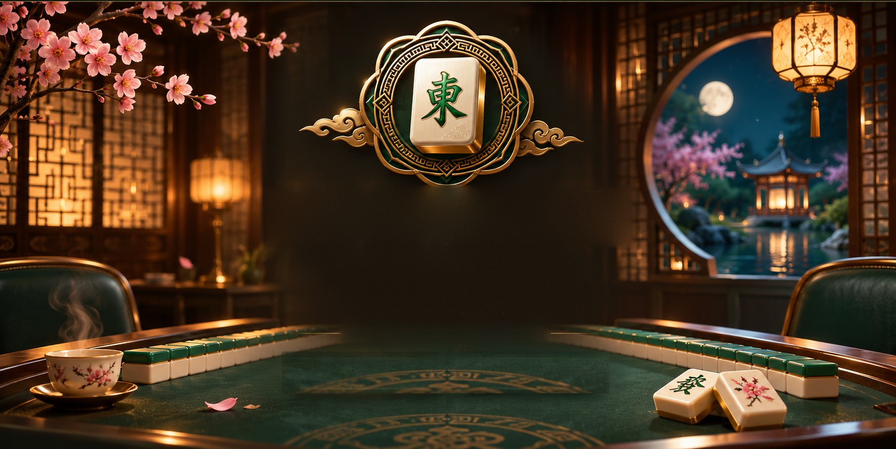
The Table Awaits.
A private mahjong club, a teacher at your side, and tiles made like jewellery.
Learn·Play·Master
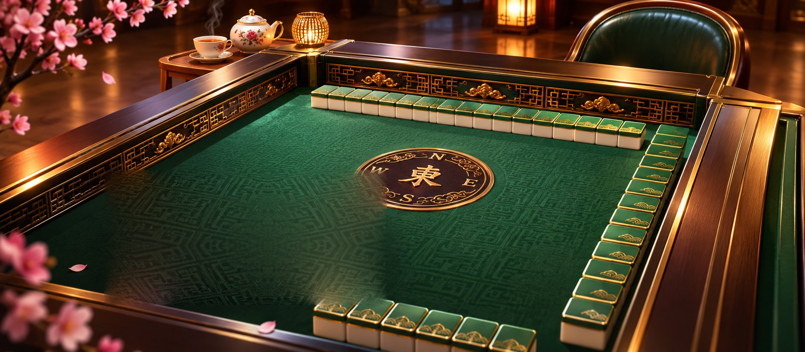
Every great evening begins with tiles on felt and a seat pulled out for you.
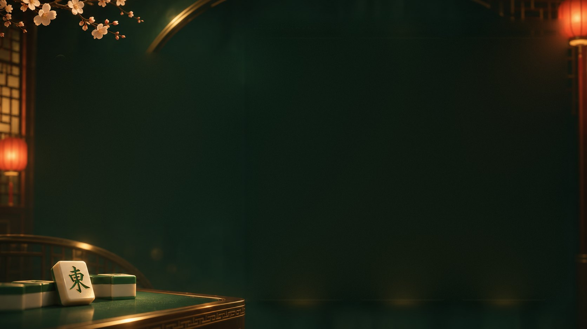
Players worth beating
Sharpen your game
before you face the world.
Five AI players, ready whenever you are. Practise until your reads are quick, then take your game online.
Short of a fourth? They fill any empty seat, each in a style of their own.
At the table
Explains every move as she plays.
Quick and aggressive. Leave a gap, he takes it.
Patient. Gives nothing away.
Chases big hands, and sometimes lands them.
Calm and conservative. Rarely rattled.
Start a table, share the link, and play together in seconds.
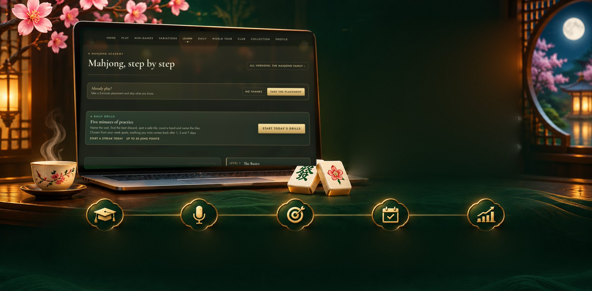
The Academy
Never played? Perfect.
Mei sits beside you for your first hand, explaining each tile and suggesting your discard.
Then the Academy takes you from your first pung to reading the whole table, one short voiced lesson at a time.
A real hand, with Mei beside you.
Captioned lessons, each with a quick test.
Already play? A short test finds your level.
Five fresh challenges a day.
See what went right and wrong.
At the table
The real game, on a 3D table you can lean into.
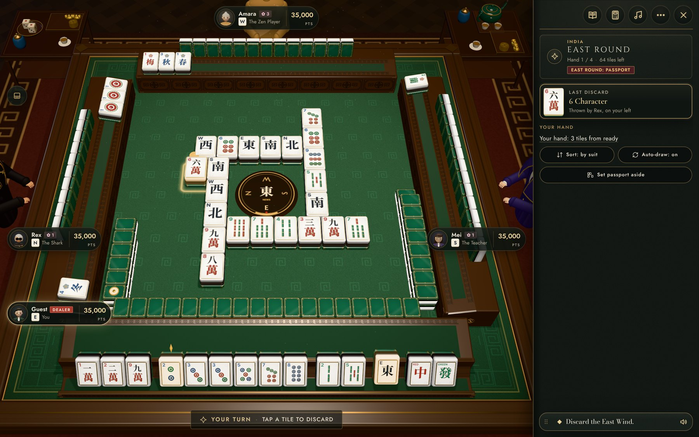
Every discard is called aloud. Claims, kongs and wins play out on the felt as the camera follows.
Stuck? JongBot suggests a play and explains why. Turn hints off when you're ready.
What to play, and why
Every pung, out loud
Zoom, tilt and turn
Review your key moments
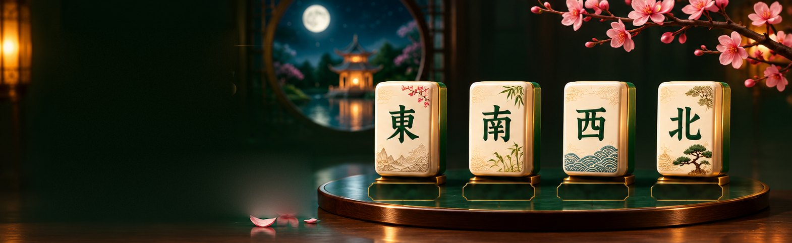
The four winds
One evening, all the way round the table.
Four rounds, East to North. The deal passes on, and the prevailing wind changes what scores. Play one round over coffee, or all four.
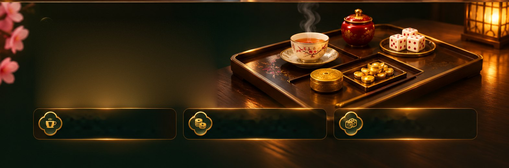
Around the table
A side table at every corner, as fine clubs lay it.
Once a hand, pour a bowl for another player.
Coins and ingots rise and fall with your score.
Two or three dice, rolled to break the wall.
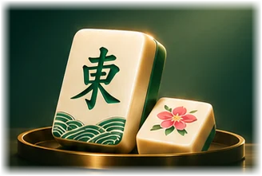
The Mahjong family
ways to play
From India to Riichi to Dubai.
Every version played properly, with its own scoring, lesson and cheat sheet.
East Asia
Southeast Asia
India and the Gulf
Europe and the Americas
Formal rulesets
Regional families
House-rule traditions
Passport
Eighteen destinations, each with its own table and a stamp to earn.
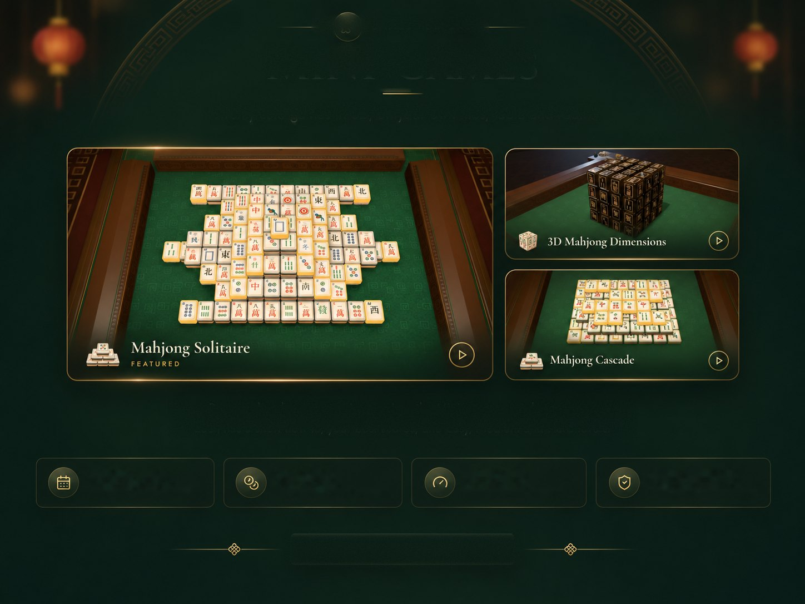
Games for one
Twenty solo games in 3D, on your own tiles, table and room.
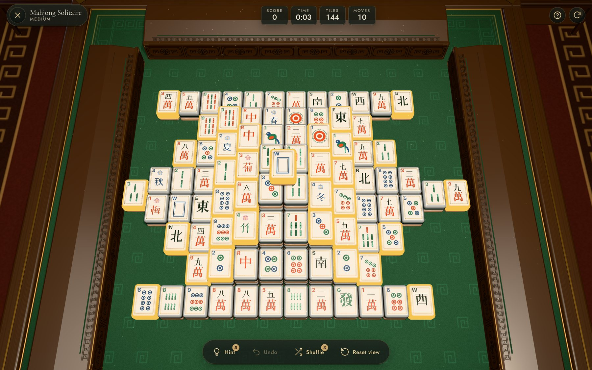
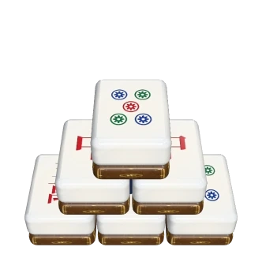
Mahjong SolitaireFeatured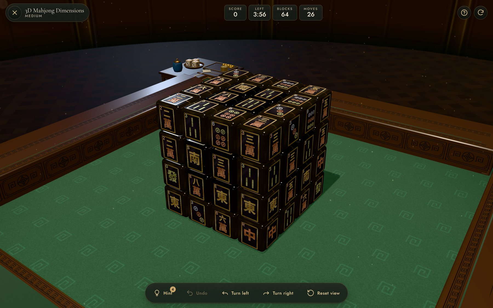
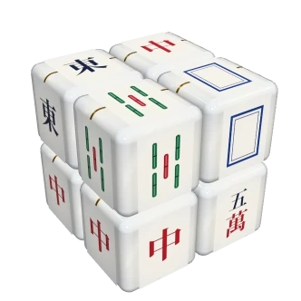
3D Mahjong Dimensions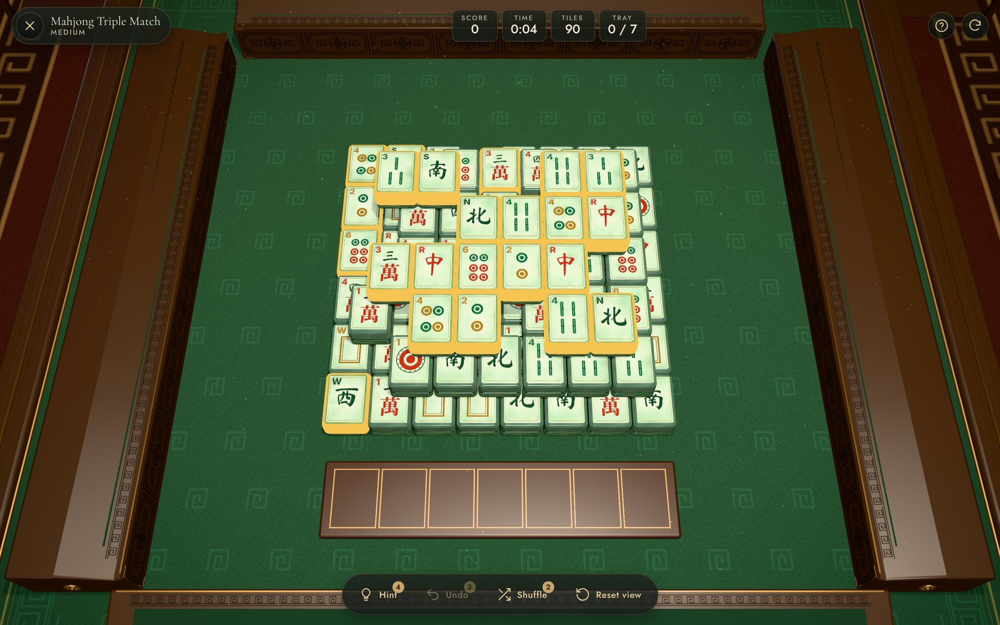
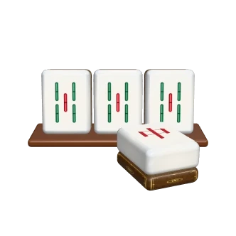
Mahjong Triple MatchBetween hands or on a quiet evening, the Mini-games are always open.
Each has a short how-to, your best scores, and Easy, Medium and Hard levels.
One board for all, +150 JP
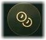
Up to 600 JP a day per game
Harder boards pay more
Mini-games never change it
All mini-games
20 solo games, each on your own tiles, table and room.
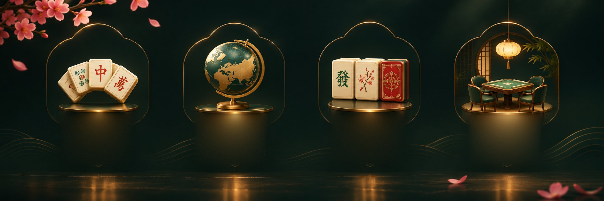
The collection
Tiles, racks and rooms made like jewellery.
Every set is its own object, not a recolour: its own body, engraving, calligraphy, even its own click on the felt.
Finishing touches
Cloths, frames, outfits and more, to make the table yours.
Classic Green, Black Marble and more
Brass Ring, Jade Ring and more
Club Blazer, Evening Suit and more
Gold Glasses, Jade Earrings and more
Classic Reveal, Lanterns and more
Candlelight, Evening Mist and more
Matched to tiles, Bamboo Hall and more
How pieces are earned
Earned at the table, in lessons, challenges and Mini-games. Spent in the Atelier.
Twenty reward steps each season. Nothing on it is for sale.
Each destination's game unlocks its table cloth, and three open a city's own room.
Top up to reach a piece sooner. Season rewards stay earned only.
Nothing in the Atelier changes gameplay or your rating.
Forbidden City
One game, played differently in every city it reached.
Compete
When you're ready for stronger company.
Each variation has its own rating, Bronze to Master. Six-week seasons, each themed on a city, bring a league, a reward track and the Season Finals.
Or start a private club for your own circle.
One per variation
Six weeks, one city
Daily to Season Finals
Your own weekly league
The studio
JongClub is made by Chacklate Experiences.
Chacklate Experiences makes games the way a good chocolatier makes chocolate: with patience, care, and the finest ingredients.
JongClub began with a simple wish: to bring the warmth of a real mahjong table online—the click of tiles, a host who teaches, and friends who share a laugh.
So we built a premium club. From Hong Kong and Tokyo to Dubai, we brought together authentic rules and scoring, created Mei, a host who guides you along the way, and made every tile and table beautiful—because a game you love should feel precious.